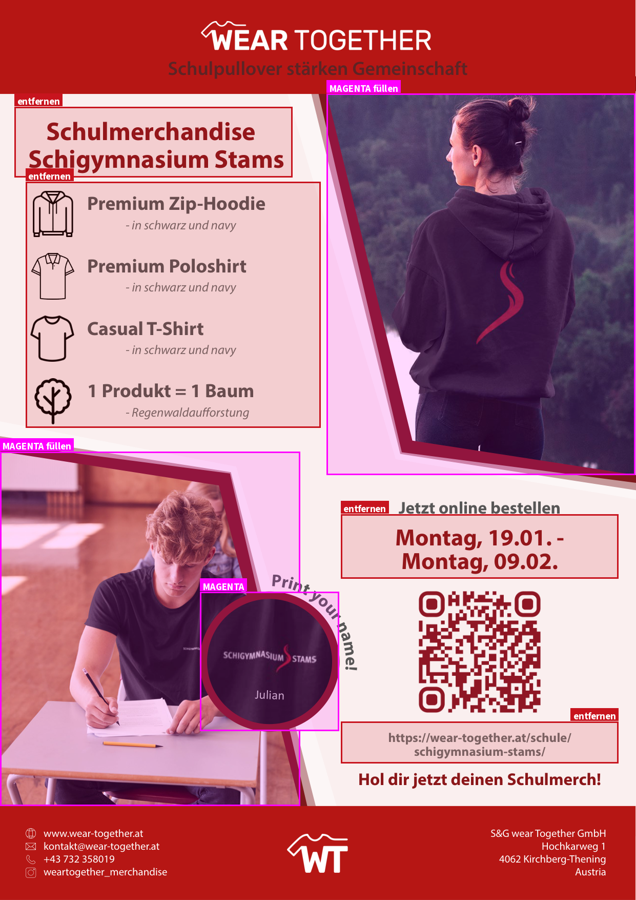
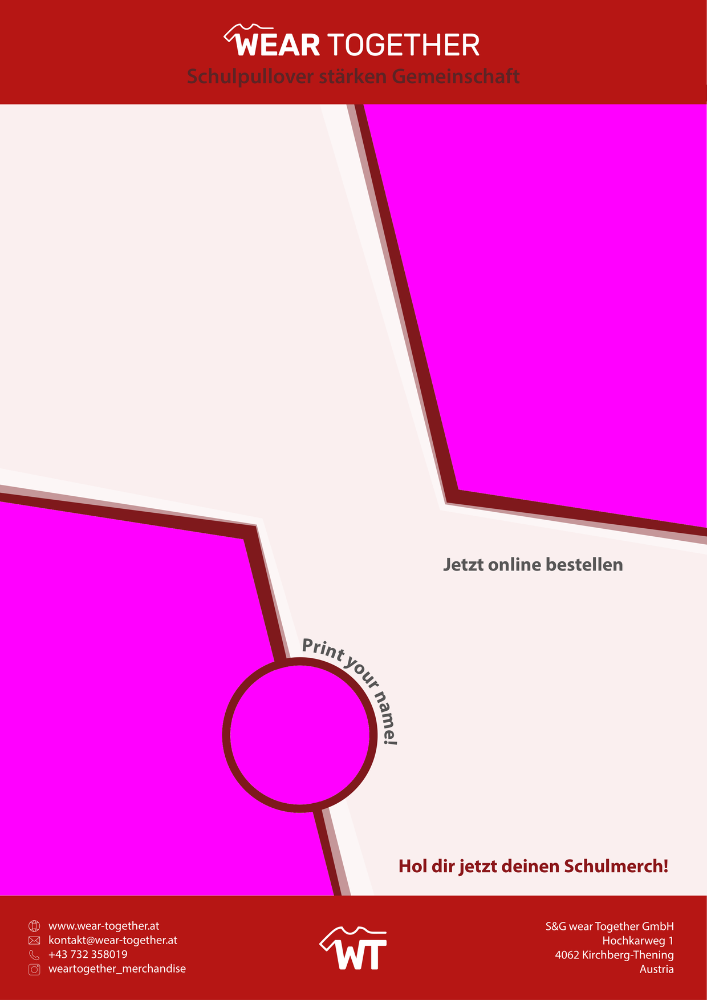

Das Präsentationsblatt, das wir bisher pro Schule in InDesign von Hand
gesetzt haben, erzeugt unser Bestell-Tool ab sofort automatisch. Schulname,
Produktzeilen, Farben, Bestellzeitraum, QR-Code und die Adresse der
Bestellseite kommen direkt aus dem Auftrag; die beiden Mockups werden im Tool
hochgeladen.
Damit das Blatt weiterhin exakt so aussieht wie bisher, braucht das Tool
zwei Dinge von dir — einmalig, nicht pro Schule:
Nr.
Was
Format
1
Der Hintergrund — alles, was auf jedem Blatt gleich ist
eine PNG-Datei, A4, 300 dpi
2
Die Produkt-Icons — ein Satz für alle Produkte
PNG mit transparentem Grund, 512 × 512 px
Der Trick mit dem Magenta: Die drei Bildplätze (beide
Mockup-Rahmen und der Kreis) füllst du in der Exportdatei mit reinem
Magenta. Das Tool stanzt diese Flächen automatisch heraus und legt die
Fotos dahinter. Dadurch bleiben deine schrägen Rahmen und der rote
Kreisring exakt so, wie du sie gesetzt hast — die Fotos werden von deiner
Datei beschnitten, nicht von der Software.
Teil 1 — Der Hintergrund

Rot = ersatzlos löschen. Diese Inhalte setzt
das Tool selbst. Magenta = Fläche mit #FF00FF füllen.
Der Rahmen und der Kreisring bleiben dabei stehen, nur die Bildfläche
darin wird magenta.
Was drin bleibt
Roter Kopfbereich mit dem WEAR-TOGETHER-Logo und dem Claim
Der helle Blatthintergrund mit allen roten und weißen Diagonalen
Der rote Kreisring samt gebogenem Schriftzug „Print your name!"
„Jetzt online bestellen" und „Hol dir jetzt deinen Schulmerch!"
Der komplette rote Fußbereich mit Kontaktdaten, Adresse und WT-Logo
Was raus muss
Beide Überschriftzeilen („Schulmerchandise" und der Schulname)
Der gesamte Produktblock links — Icons, Produktnamen und Farbzeilen,
auch die Zeile „1 Produkt = 1 Baum"
Der Bestellzeitraum
Der QR-Code und die beiden Adresszeilen darunter
Der Vorname im Kreis
Beide Mockup-Fotos und die Detailaufnahme im Kreis
Schritt für Schritt
Vorlage kopieren
Arbeite an einer Kopie der bestehenden InDesign-Datei, damit die
Originalvorlage erhalten bleibt.
Variable Inhalte löschen
Alles, was oben unter „Was raus muss" steht — inklusive der leeren
Textrahmen. Zurück bleibt das Blatt ohne jede schulspezifische Angabe.
Bildplätze magenta füllen
Die beiden Mockup-Rahmen und den Kreis mit einer Vollfläche in reinem
Magenta füllen: R 255 · G 0 · B 255 (bzw.
#FF00FF). Wichtig: keine Transparenz, kein Verlauf, keine
Deckkraft unter 100 %, kein Schlagschatten. Die Fläche muss den
Rahmen randlos ausfüllen.
Prüfen, dass sonst nirgends Magenta vorkommt
Das Tool erkennt die Bildplätze allein an dieser Farbe. Ein magentafarbenes
Detail an anderer Stelle würde ebenfalls ausgestanzt.
Als PNG exportieren
Datei → Exportieren → PNG. Einstellungen: Auflösung 300 dpi,
Farbraum RGB, Hintergrund deckend
(nicht transparent), Qualität „Maximum", ohne Anschnitt
und ohne Druckermarken.
Dateigröße kontrollieren
Das Ergebnis muss 2481 × 3508 Pixel groß sein. Weicht
das ab, stimmt die Auflösung oder das Seitenformat nicht.

So sieht die fertige Datei aus. Genau das ist
das erwartete Ergebnis: alles Statische unverändert, die drei Bildplätze
magenta, keine schulspezifischen Angaben.
Wichtig zum Kreis: Der rote Ring und der Schriftzug
„Print your name!" bleiben Teil des Hintergrunds — nur die Kreisfläche
innerhalb des Rings wird magenta. Der Ring darf die Magentafläche
ruhig ein Stück überlappen, das ist sogar erwünscht: er verdeckt die Kante
des eingesetzten Fotos.
Teil 2 — Die Produkt-Icons
Jede Produktzeile bekommt ein Icon. Vier davon konnten wir aus der
bestehenden Vorlage übernehmen, die übrigen fehlen noch. Bitte liefere den
kompletten Satz in einheitlichem Stil — dieselbe Strichstärke und optisch
gleiche Größe wie die bereits vorhandenen.
Dateiname
Produkt
Status
zoodie.png
Zip-Hoodie
vorhanden
polo.png
Poloshirt, Match-Polo
vorhanden
t-shirt.png
T-Shirt, Sportshirt, Kinder-T-Shirt
vorhanden
tree.png
Baum („1 Produkt = 1 Baum")
vorhanden
hoodie.png
Hoodie, Kinder-Hoodie
wird gebraucht
sweater.png
Sweater
wird gebraucht
jacket.png
College-Jacke
wird gebraucht
bag.png
Umhängetasche
wird gebraucht
Format je Icon: PNG mit transparentem Hintergrund,
512 × 512 Pixel, schwarze Strichzeichnung, im Quadrat zentriert und rundum
etwas Luft. Die Dateinamen bitte exakt wie in der Tabelle (klein, ohne
Umlaute) — das Tool ordnet sie darüber zu.
Die vier vorhandenen Icons bekommst du von mir als Muster mitgeliefert.
Am einfachsten nimmst du eines davon als Vorlage und zeichnest die
fehlenden im selben Stil.
Wie du mir das übergibst
Ein Ordner mit:
hintergrund.png — der Export aus Teil 1
icons/ — die acht Icon-Dateien aus Teil 2
die bearbeitete InDesign-Datei, damit spätere Änderungen möglich bleiben
Ich spiele beides ins Tool ein und schicke dir ein fertig erzeugtes Blatt
zur Kontrolle zurück.
Häufige Fragen
Muss ich das pro Schule machen?
Nein. Einmalig. Danach erzeugt das Tool jedes Blatt selbst — für neue
Schulen ändert sich für dich nichts mehr.
Warum PNG und nicht PDF?
Das Tool legt die Fotos hinter den Hintergrund und braucht dafür eine
Datei mit echten Transparenzflächen. Das geht mit PNG zuverlässig, mit PDF
nicht. Die Schriften im Hintergrund sind dabei fest eingebrannt — bei
300 dpi ist das im Druck nicht von Text zu unterscheiden.
Was passiert mit der Schrift der variablen Texte?
Die setzt das Tool selbst, in Source Sans 3. Myriad
Pro dürfen wir auf dem Server nicht einbetten. Die beiden Schriften stammen
vom selben Gestalter und sind praktisch deckungsgleich — im direkten
Vergleich mit dem alten Blatt liegen alle Zeilen auf einem Zehntel
Millimeter genau an derselben Stelle.
Kann ich das Layout auch ändern, nicht nur nachbauen?
Ja, solange die drei Bildplätze magenta bleiben und das Blatt A4 bleibt.
Verschiebst du aber die variablen Textbereiche (Überschrift, Produktzeilen,
Datum, QR-Code), sag mir vorher Bescheid — deren Positionen sind im Tool
hinterlegt und müssen dann angepasst werden.
Was, wenn ein Blatt in einer anderen Farbe gebraucht wird?
Kein Problem: Dann lieferst du denselben Export in der anderen Farbe.
Wir hinterlegen mehrere Hintergründe und wählen im Tool aus.